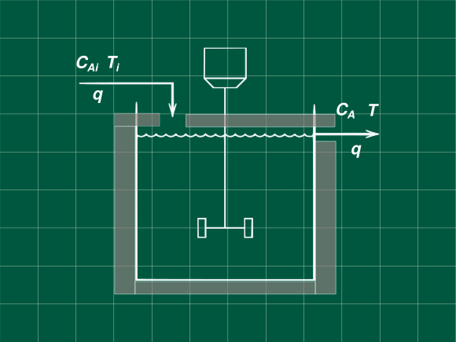
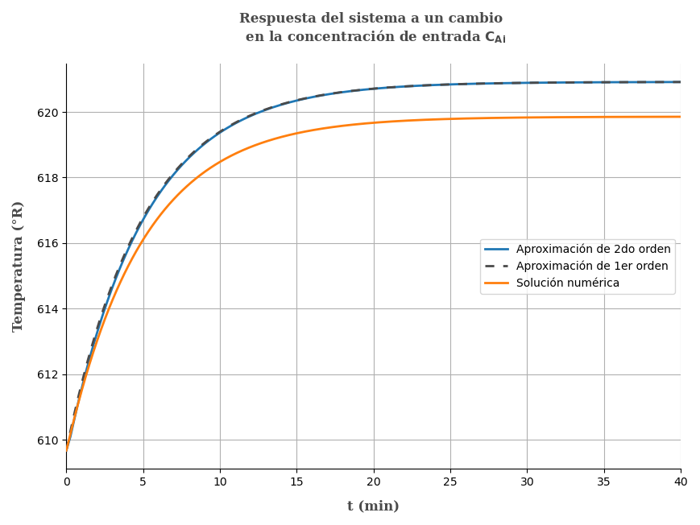

11 Una reacción exotérmica, un reactor con cambio de temperatura
Problema 5.21 (Process Dynamics and Control - Seborg, Edgar, M, D)

Una reacción exotérmica toma lugar en un tanque agitado adiabático, La reacción líquida ocurre a volumen constante V = 100 gal, La reacción puede ser considerada de primer orden e irreversible dada por la ecuación k = k_0e^{-E_R/T} Con k_0=2.4\times 10^{15} y E_R = 20\space000. Donde T esta en °R, usando los datos proporcionados abajo determine la función transferencia que relaciona la temperatura de salida T, y la concentración de entrada CAi, describa lo que se asume para resolverlo. Simplifique la función transferencia haciendo una aproximación a primer orden, muestre que es válida con una perturbación tipo escalón unitario(heaviside) y compare las respuestas con la respuesta original y la respuesta de función de transferencia no simplificada.
Condiciones de estado estacionario
\begin{array}{ll} T_s = 150 \space °F & C_{Ais}=0.8\space lb\space mol/pie^3\\ q=20\space gal/min & \\ \end{array}
Propiedades físicas de la mezcla
\begin{array}{ll} C_p=0.8\text{ BTU/(lb °F)}& \rho=52\text{ lb/pie³}\\ -\Delta H_R = 500\text{ kJ/(lb mol)}\\ \end{array}
Reescribiendo nuestros datos, pero estandarizando unidades. Sabiendo que: \begin{array}{cc} T[°R]= T[°F]+459.67 &1\text{ pie³ } = 7.48\text{ gal}\\ 1\text{ BTU } = 1.055\text{ kJ}\\ \end{array}
T_s = 609.67 \text{ °R}\\ -\Delta H_R = 473.9336 \text{ BTU/(lb mol)}\\ q = 2.6738 \text{ pie³/min}\\ V = 13.3690\text{ pie³}
Realizando el balance de materia para los moles de A.
V\frac{dC_A}{dt}=q(C_{Ai}-C_A)-Vk(T)C_A \space\space\space\space\textbf{ .... (1)}
Realizando el balance en estado estacionario
0=q(C_{Ais}-C_{As})-Vk(T_s)C_{As}\space\space\space\space\textbf{ .... (2)}
Restado (1) y (2) y adecuando la ecuación para cambiar a variables desviación
V\frac{d(C_A-C_{As})}{dt}=q\left[(C_{Ai}-C_{Ais})-(C_A-C_{As})\right]-V\left[k(T)C_A-k(T_s)C_{As}\right]
Conviertiendo a variables desviación
V\frac{dC'_A}{dt}=q(C'_{Ai}-C'_A)-V(k(T)C_A-k(T_s)C_{As}) \space\space\space\space\textbf{...(3)}
Linealizando la expresión k = k_0e^{E_R/T} usando la aproximaciones en series de taylor al rededor del el punto del estado estacionario.
f(x,y)=f(x_s,y_s)+\frac{df}{dx}\bigg|_{x=x_s}(x-x_s)+\frac{df}{dy}\bigg|_{y=y_s}(y-y_s)
Reemplazando con f(T,C_A)=k(T)\cdot C_A con k(T) = k_0e^{-E_R/T} y T, C_A como variables independientes
\frac{df}{dT}\bigg|_{T=T_s, C_A=C_{As}}= \frac{k_0E_R}{T_s^2}e^{-E_R/T_s}C_{As}
\frac{df}{dC_{A}}\bigg|_{T=T_s, C_A=C_{As}}= k_0e^{-E_R/T_s} \\
\\ k(T)C_A = k(T_s)C_{As}+\frac{k_0E_R}{T_s^2}e^{-E_R/T_s}C_{As}(T-T_s)+ k_0e^{-E_R/T_s}(C_A-C_{As})
En variables desviación es:
k(T)C_A - k(T_s)C_{As}=\frac{k_0E_R}{T_s^2}e^{-E_R/T_s}C_{As}T'+ k_0e^{-E_R/T_s}C'_A\textbf{ ... (4)}
Para una ecuación muy extensa es mejor reemplazar cuidadosamente los datos, pero antes debemos hallar el valor de C_{As}.
Despejando de la ecuación (2) del balance en estado estacionario.
0=q(C_{Ais}-C_{As})-Vk(T_s)C_{As}
0=q(C_{Ais}-C_{As})-Vk_0e^{E_R/T_s}C_{As}
0=2.6738(0.8-C_{As})-13.3690\times 2.4\times 10^{15} e^{-20000/609.67}C_{As}
Despejando
C_{As}=0.0116\text{ lb mol/ pie³}
Ahora reemplazando todos los datos conocidos en la ecuación (4)
\begin{array}{l} k(T)C_A - k(T_s)C_{As} = \\ \\ \frac{2.4\times 10^{15} 20000}{609.67^2}e^{-20000/609.67}\times 0.00116T'+ 2.4\times 10 ^{15}e^{-20000/609.67}C'_A \end{array}
k(T)C_A - k(T_s)C_{As} = 0.008485T'+12.2025C'_A \space\space\textbf{ ... (5)}
Reemplazando en la ecuación (3) y reemplazando datos conocidos
V\frac{dC'_A}{dt}=q(C'_{Ai}-C'_A)-V(k(T)C_A-k(T_s)C_{As})
V\frac{dC'_A}{dt}=q(C'_{Ai}-C'_A)-V(0.008485T'+12.2025C'_A)
13.369\frac{dC'_A}{dt}=2.6738(C'_{Ai}-C'_A)-13.369(0.008485T'+12.2025C'_A)
13.3690\frac{dC'_{A}}{dt}=2.6738(C'_{Ai}-C'_A)-0.11343 T'-163.1352C'_A
Aplicando la transformada de Laplace y ordenando
13.369sC'_A(s)=2.6738C'_{Ai}(s)-0.11343T'(s)-165.809C'_A(s)
C'_A(s) = \frac{2.6738C'_{Ai}(s)-0.11343T'(s)}{13.369s+165.809}\space\space\textbf{ ... (6)}
Realizando el balance de energía del sistema
\left(\frac{dU}{dt}\right)=H_i-H+\Delta H_R(T)
\rho V C_p \frac{dT}{dt}=q\rho C_p(T_i-T)+V\Delta H_Rk(T)C_A
En estado estacionario
0=q\rho C_p(T_{is}-T_s)+V\Delta H_Rk(T_s)C_{As}
Restando ambas ecuaciones y expresando en variables desviación
\rho V C_p \frac{dT'}{dt}=q\rho C_p(T'_i-T')+V\Delta H_R(k(T)C_A - k(T_s)C_{As})
Reemplazando la ecuación (5) y reemplazando valores conocidos
\begin{array}{l} 52 \times 13.369 \times 0.8 \frac{dT'}{dt}=\\ \\ 2.6738\times 52\times 0.8(T'_i-T')+13.369\times 473.9636(0.008485T'+12.2025C'_A) \end{array}
556.1504\frac{dT'}{dt}=111.2300(T'_i-T')+53.7645T'+77315.2633C'_A
Observando la ecuación y revisando el enunciado no pide hallar la función transferencia que relaciona la temperatura con la concentración de entrada es decir T'(s)/C'_{Ai}, y no indica una variación en la temperatura de entrada T_i al no existir variación en la temperatura T_i la variable desviación es T'_i = T_i-T_{is}=T_{is}-T_{is}=0.
Por lo que nuestra ecuación anterior se simplifica a:
556.1504\frac{dT'}{dt}=-57.4655T'+77315.2633C'_A
Aplicando la transformada de Laplace y ordenando
556.1504sT'(s)=-57.4655T'(s)+77315.2633C'_A(s)
T'(s)(556.1504s+-57.4655)=77315.2633C'_A(s)
Reemplazando C'_A de la ecuación (6)
T'(s)(556.1504s+57.4655)=77315.2633\left(\frac{2.6738C'_{Ai}(s)-0.1134T'(s)}{13.369s+165.809}\right)
T'(s)(556.1504s+57.4655)(13.369s+165.809)+8767.5508T'(s)=77315.2633\times 2.6738C'_{Ai}(s)
\frac{T'(s)}{C'_{Ai}(s)}=\frac{206725.5510}{(556.1504s+57.4655)(13.369s+165.809)+8767.5508}
\frac{T'(s)}{C'_{Ai}(s)}=\frac{206725.5510}{7435.1747s^2+92982.998s+18295.8479}
\frac{T'(s)}{C'_{Ai}(s)}=\frac{27.8037}{s^2+12.5058s+2.4607}
\frac{T'(s)}{C'_{Ai}(s)}=\frac{27.8037}{(s+0.19995)(s+12.3585)}
\mathbf{\frac{T'(s)}{C'_{Ai}(s)}=\frac{11.2488}{(5s+1)(0.08092s+1)}}\space\space\space\space\textbf{... }\mathbf{\alpha}
Para una perturbación C'_{Ai}=1/s
T'(s)=\frac{11.2488}{s(5s+1)(0.08092s+1)}
Realizando al antitransformada(de tablas)
T'(t)=11.2488\left(1-\frac{5}{4.91908}e^{-t/5}+\frac{0.08092}{4.91908}e^{-t/0.08092}\right)\space\space\space\space\textbf{... }\mathbf{\beta}
Ahora modificando la ecuación notando que el termino 5s>>0.08092s aproximando este último a cero
T'(s)=\frac{11.2488}{s(5s+1)}
Realizando la antitransformada
T'(t)=11.2488\left(1-e^{-t/5}\right)\space\space\space\space\textbf{... }\mathbf{\gamma}
Comparando las gráficas de las ecuaciones \mathbf{\beta} y \space\mathbf{\gamma}

Como se observa en la gráfica una aproximación de primer orden es suficiente, notesé también que existen una sobreestimación de la ganancia con la aproximación que se ha realizado.
Referencias
- Seborg, D. E.; Edgar, T. F.; Mellichamp, D. A.; Doyle, F. J. (2016). Process Dynamics and Control (4th edition). John Wiley & Sons, Inc. ISBN 978-1-119-28591-5.